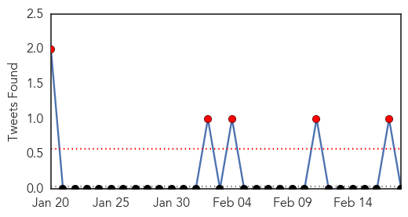
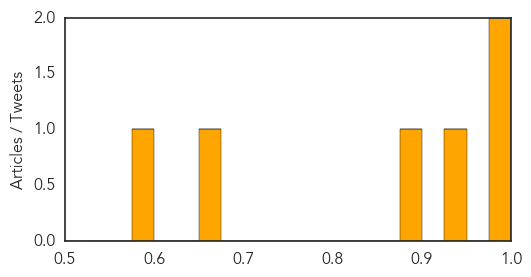
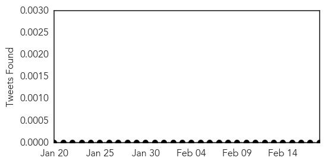

Dengue Fever
30-Day Web Trend
2 alerts, 0 warnings

30-Day Twitter Trend
6 alerts, 0 warnings

Article Locations

Article Confidences
Top Articles:
Top Tweets:
- 0.528
- Flavivirus news: Dengue outbreak rises to 32 cases - Newsport Daily: Newsport DailyDengue outbr... http://t.co/5IIqZIAqlY pathogenposse
Meningitis
30-Day Web Trend
5 alerts, 0 warnings

30-Day Twitter Trend
0 alerts, 0 warnings

Article Locations

Article Confidences

Top Articles:
- 0.978
- QMed : Brucella and Coxiella; if you don't look, you don't find
- 0.889
- Vaccination clinics to start Wednesday at Acadia University - Halifax
- 0.875
- UGA student dies from encephalitis
- 0.841
- Timely Approval For New Meningitis Vaccine; Controlling An Outbreak
- 0.804
- Results to be released Thursday in UGA student's death
- 0.727
- UGA discounts meningitis rumors after student death
- 0.655
- Meningitis cases at St. Francis Xavier University 'concerns' doctor
- 0.571
- AHF: L.A. County Finally Acknowledges Meningitis Threat—Two Years Late
- 0.524
- AHF: L.A. County Finally Acknowledges Meningitis Threat—Two Years Late
Top Tweets:
-
No tweets found for Feb 18, 2015